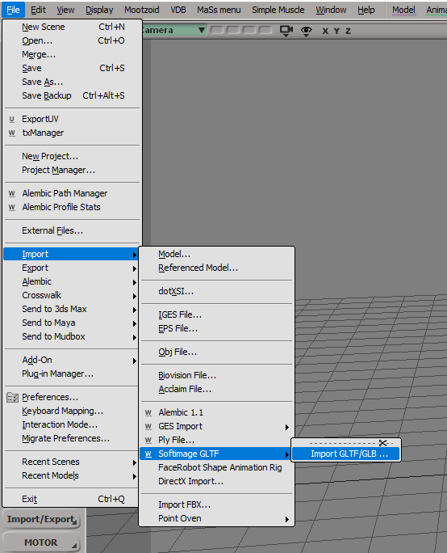
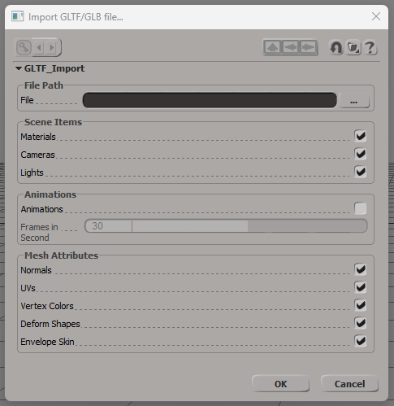
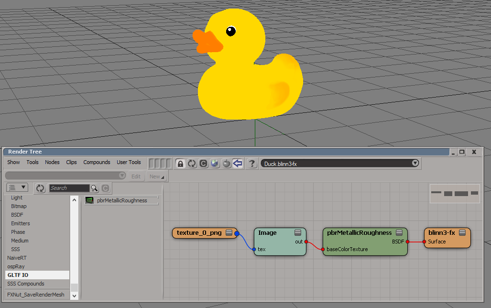
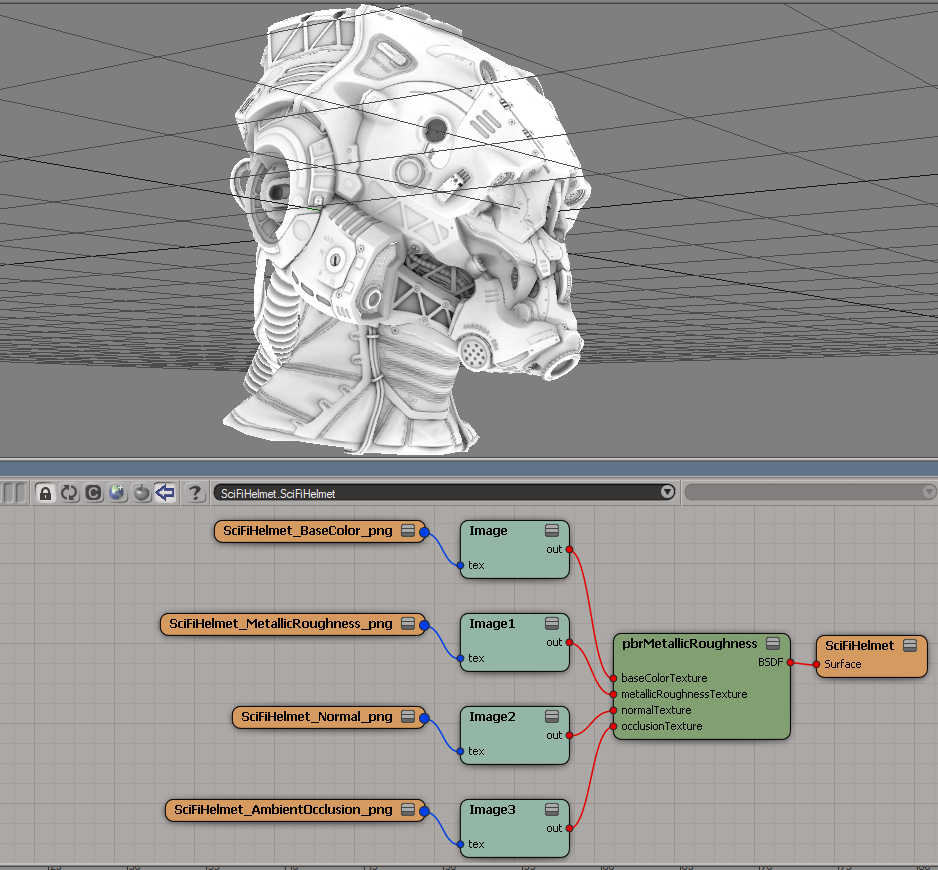
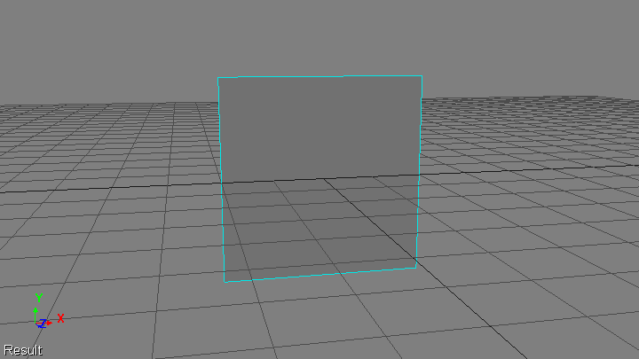
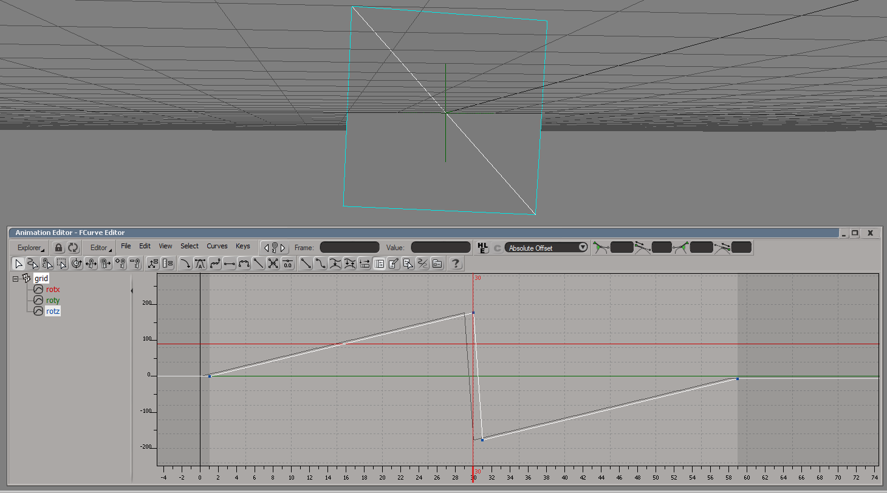
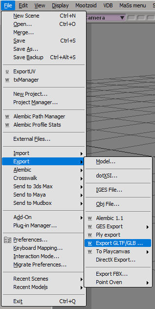
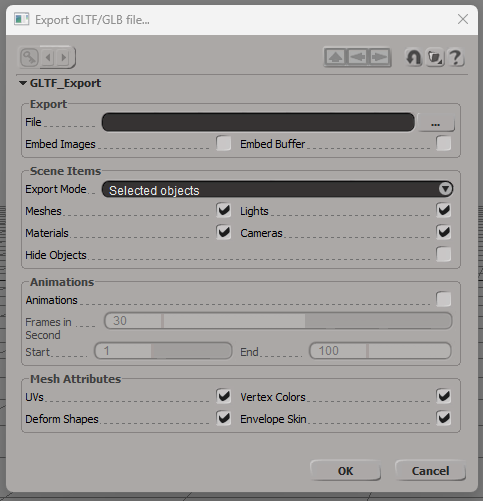
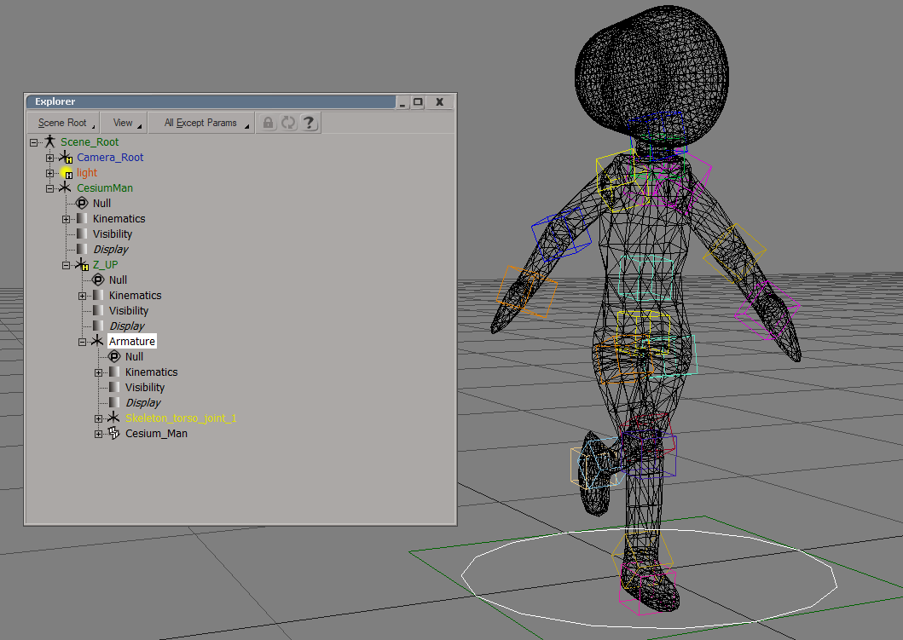

Last update: 28.06.2022
Description: This addon allows to import/export *.gltf and *.glb files into/from Softimage. It based on tinygltf library. The addon supports the following items for import from gltf/glb scenes:
- Scene hierarchy
- Cameras
- Polygonmesh objects. Import the following mesh attributes:
- Vertex positions
- Polygon indices
- Vertex normals
- Vertex uvs
- Vertex colors
- Envelope weights
- Shape deforms, supports only vertex positions
- Transform animations
- Skin deformers
- Materials
The addon does not supports gltf extensions. It recognize only default gltf nodes and attributes.
For export the addon supports the following scene items:
- Cameras
- Polygonmesh objects. Export the following mesh attributes:
- Vertex positions
- Polygon indices
- Vertex normals
- Vertex uvs
- Vertex colors
- Envelope weights
- Shape deforms
- All other scene object exported as nulls
- Materials. Recognise only materials with special main shader node pbrMetallicRoughness
- Transform animations
Download: Softimage GLTF R.2. There are sources of the addon on the GitHub.
How to use: Install as usual addon for Softimage.
Import files
Select File - Import - Import GLTF/GLB...
Select input file and scene items to import. If you would like to import animation from the file, then activate the Animations parameter and setup the frames in seconds value. In GLTF/GLB files animation is stored in seconds.
Press Ok
Materials import
GTF/GLB format supports only one standard PBR material. This material quite simple and can contains the following textures:
- Base color. Use all four channels RGBA
- Metallic Roughness. Use B channel for metallic and G channel for roughness
- Normal. Use three channels RGB
- Occlusion. Use only R channel. In most cases occlusion texture is the same as metallic/roughness texture
- Emission. Use three channels RGB
If the GLTF/GLB file contains materials and import materials is activated, then importer create the library with the same name as imported file and add all materials to this library. All materials have the same structure. The main shader node is a special pbtMetallicRoughness node. It does not rendered by any render engine. If imported material reference to textures, then it copies to the folder [Project]\Pictures\gltf_io\[File name] and connected to the input ports of the main shader node.
Animations import remarks
In GLTF/GLB animation of rotation is stored in quaternions, but in Softimage rotation is animated by axis angles. In some cases the conversation may prodice wrong result. Consider the following simple animation: plane, rotating in 360 degrees.
This animation is imported in the following way
Quaternion that encode the rotation from 0.0 to 180.0 degrees converted to the positive angle, but if the quaternion encode degree from 180.0 to 360.0, then it converted to negative angle. This is the natural behavior, because the same quaternion correspond to the infinite number of angles (with period 360.0). It's recommended to bake animation at every frame and use the same frame rate in the import process.
Export the scene
Select File - Export - Export GLTF/GLB...
Set the output file name, select items to export and press OK.
The export window has following parameters:
- File - full output path. It is possible to use *.gltdf or *.glb extension
- Embed Images - if activated, then all textures for materials will be saved inside output file using base64 encoder. If the parameter is deactivated, then textures will be copies to the same directory as output file
- Embed Buffer - if activated, then (as for images) binary scene data will be saved inside output file. If deactivated, then this file will be created in the same directory as output file with the same name (but extension *.bin)
- Export Mode - if the mode is Selected objects, then only selected objects with all sub-objects will be exported. The mode Whole scene is equivalent to select the scene root node
- Materials - export materials or not
- Cameras - export camera objects or not. If deactivated, then all cameras will be exported as null objects
- Hide Objects - if activated, then hidden (from the view) objects will be exported. If deactivated, then all hidden objects are excluded from exported objects with all sub-objects
- Animations - if activated, then export transform animations of objects
- Frames in Second - in Softimage animations are stored in frames, in glt-format animations are stored in seconds. This parameter allows to map frames to seconds
- Start and End - start and end frames of the animation interval for export
- Uvs - if activated, then save all uvs of all exported meshes
- Vertex Colors - if activated, then save all vertex colors of all exported meshes
- Deform Shapes - if activated, then save all deform shapes as morph targets of all exported meshes. Export only vertex position morph targets, because Softimage does not supports other attributes
- Envelope Skin - if activated, export skin weights information for all enveloped exported meshes
Materials export
The addon can export materials to the GLTF/GLB format, but this material should satisfy several conditions. For each material the exporter takes the first shader node, connected to the Surface port of the root material node. If this node is not pbrMetallicRoughness node, then the material is skipped. In other case the exporter write all parameters of this node and try to get textures, connected to this node. It check each input port (there are five ports for textures). If the image node is connected to the port, then the exporter save the texture of this node, in all other cases the texture is skipped.
Animations export
The exporter allows to export transform animations of scene objects. For each object the exporter check transform parameters. If one of them is animated, then the exporter save the value of this parameter at each frame from the selected interval in the linear interpolation mode.
Skins export
If a mesh has envelope deformer, then it exports as skinned object. There are two important differences with respect to other objects. At first, the transform of the skinned object is ignored. At second, all deformer (null or bone) transforms exported with values from Static Kine State, i.e. it export transforms at the moment when the envelope deformer is applied. So, in GLTF/GLB scene the skinned object stored in neutral pose. If you need other pose, then save actual deformer transforms as animated parameters.
The recommended hierarchy for the skinned object is the following
Armature is a root null for the skined object. As sub-objects it should contains geometry mesh objects and deformers. Geometry (Cesium_Man<\i> in the example) is a separate object, and it shouldn't contains as sub-objects any deformer. The hierarchy of deformers are separate from geometry. In the example it starts from the object Skeleton_torso_joint_1. If any deformer is sub-object of the skined geometry, then it may contains invalid pose transform.